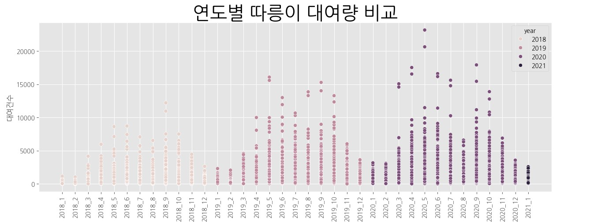

주제 교체
팀원의 개인적인 사정으로 혼자서 프로젝트를 진행하게 되었습니다. 따라서 급하게 주제를 '따릉이 대여소 신규 건설을 위한 위치 추천'에서 '따릉이 대여량 예측'으로 바꾸었습니다. 이에 따라서 3주 동안의 결과물을 활용하기는 어려워졌지만 과감한 결정이 필요했습니다.
대여량 예측을 위해 무슨 모델링을 선택했는지, 그 결과가 어떤지 확인해보겠습니다.
RandomForest 알고리즘이란 여러 개의 결정트리(Decision Tree)를 활용한 배깅 방식의 대표적인 알고리즘입니다. 이 알고리즘은 결정크리의 쉽고 직관적인 장점을 가지고 있고 다양한 분야에서 좋은 성능을 보입니다. 더불어 앙상블 알고리즘 중 비교적 빠른 수행속도를 가지고 있습니다. 하지만 단점으로는 하이퍼 파라미터가 많아 튜닝을 위한 많은 시간이 소요된다는 점이 있습니다.
해당 알고리즘을 사용해 결과를 확인해본 결과는 위의 시각화된 그래프에서 확인할 수 있습니다. 실제값과 예측값의 차이가 너무 크고 중간 중간에 튀는 값도 있음을 확인할 수 있습니다. 아래의 XGBoost 알고리즘을 적용한 결과와 비교해보면 XGBoost가 더 나은 성능을 가짐을 알 수 있습니다.
다른 알고리즘을 적용한 모델보다 XGBoost알고리즘을 적용한 것이 더 RMSE점수가 낮아 이를 선택했습니다. 우선, XGBoost알고리즘이 어떤 특징을 가지고 있는지 설명하겠습니다. Gradient Boosting 알고리즘은 병렬 학습을 지원 하지 않아 순차적으로 데이터를 학습하는 데 시간이 많이 걸린다면 이 문제를 해결한 알고리즘이 병렬 학습이 지원되도록 구현된 XGBoost 알고리즘입니다. 모델을 적용한 결과는 위의 시각화와 같으며 하이퍼 파라미터를 탐색해 적용까지 마친 모델입니다.
모델이 학습한 데이터셋을 시각화해서 이를 확인해보겠습니다.
Feature Importance를 보면 month와 year가 중요한 지표라고 보여주고 있습니다. 모델이 학습할 때 사용한 데이터를 month별로 대여량을 시각화 했을 때 이는 유의미한 지표임을 다시 확인할 수 있습니다. year지표도 마찬가지입니다. 2018년도에 대여량 총합계는 약 911만(9,115,963), 2019년도에는 약 1779만(17,791,752), 2020년도에는 약 2250만(22,501,066)으로 이 또한 유의미한 지표임을 알 수 있습니다.

만든 XGBoost모델을 통해서 예측된 대여량을 월별로 묶어서 시각화해봤습니다. 대여소별 예측 대여량을 확인하고 싶다면 Introduction 페이지의 지도를 통해서 확인가능합니다.